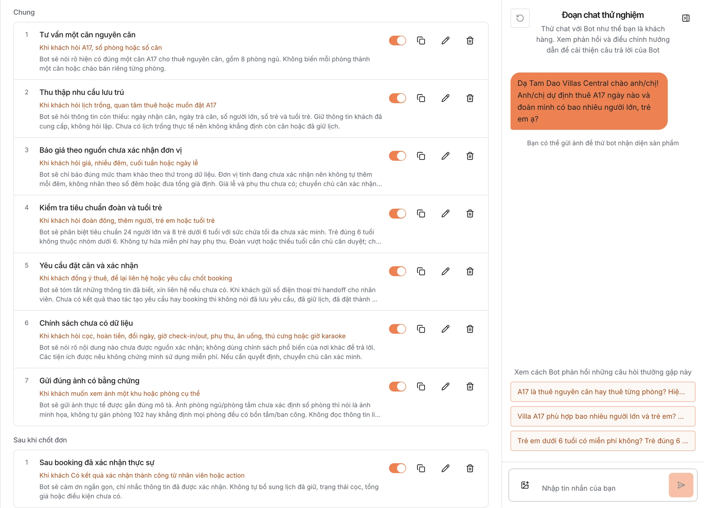

Rapiz Đào tạo Bot
Bot chưa rõ,
bạn dặn thêm.
Điền thông tin cửa hàng, dặn cách xử lý từng tình huống, rồi hỏi thử ngay bên cạnh. Mỗi lần sửa đều được ghi lại để khôi phục.
Khách quan tâm sản phẩm
Khi khách hỏi giá, hỏi size hoặc nói thích một sản phẩm
thì Bot sẽ trả lời xong rồi xin số điện thoại và địa chỉ nhận hàng để lên đơn.
“Dạ size M còn hàng ạ. Chị cho em xin số điện thoại và địa chỉ để em lên đơn nhé?”
Thử dặn bot một dòng.
Khách hỏi đồ đã mặc có đổi được không, bot chưa có thông tin. Chọn một dòng thêm vào mục Đổi trả, lưu lại rồi xem bot trả lời lại.
Thông tin doanh nghiệp › Theo ngành
Đổi trả
Đổi size trong 7 ngày kể từ khi nhận hàng, sản phẩm còn tem mác và chưa giặt.
GIAO DIỆN ĐÀO TẠO BOT
Sửa bên trái,
hỏi thử bên phải.
- Danh sách tình huống
- Mỗi tình huống ghi rõ khi nào áp dụng và bot sẽ làm gì. Tắt một cái là bot thôi làm theo.
- Đoạn chat thử nghiệm
- Hỏi như khách thật, hoặc bấm câu hỏi gợi ý để xem bot trả lời ra sao.


CÒN TRONG TÍNH NĂNG NÀY
Còn gì
để dạy bot.
- Ô thông tin theo ngành
Mỗi ngành có sẵn các ô như thanh toán, giao hàng, đổi trả. Bot đọc đúng những gì bạn ghi.
Đào tạo Bot › Thông tin doanh nghiệp - Câu hỏi thường gặp từ tệp CSV
Nhập tối đa 100 câu hỏi và câu trả lời một lần, thêm vào danh sách đang có.
Đào tạo Bot › Thông tin doanh nghiệp - Tin nhắn nhanh
Lưu sẵn câu hay dùng với từ viết tắt như /uudai để nhân viên gõ nhanh trong hộp thư.
Đào tạo Bot › Cài đặt › Tin nhắn nhanh - Tool Ads Facebook
Tạo mã JSON cho mẫu tin nhắn của quảng cáo Click-to-Messenger, rồi dán vào Trình quản lý quảng cáo.
Đào tạo Bot › Tool Ads Facebook
CÂU HỎI THƯỜNG GẶP
Trước khi
dạy bot.
Tôi không rành công nghệ, có tự dạy bot được không?
Được. Bạn điền biểu mẫu bằng tiếng Việt, bắt đầu từ mẫu của ngành. Trợ lý Rapiz có thể soạn sẵn nội dung thành đề xuất, bạn kiểm tra rồi bấm Áp dụng.
Bot trả lời sai thì sửa ở đâu?
Hỏi lại trong Đoạn chat thử nghiệm và mở Các bước bot đã làm để xem bot đã tra gì. Sửa ô thông tin hoặc tình huống liên quan rồi hỏi lại.
Lỡ sửa sai thì sao?
Mở Lịch sử chỉnh sửa và bấm Khôi phục ở lần sửa trước đó.
Một tài khoản có nhiều bot được không?
Có. Mỗi bot có thông tin, tình huống và danh sách sản phẩm riêng, gắn với trang riêng.